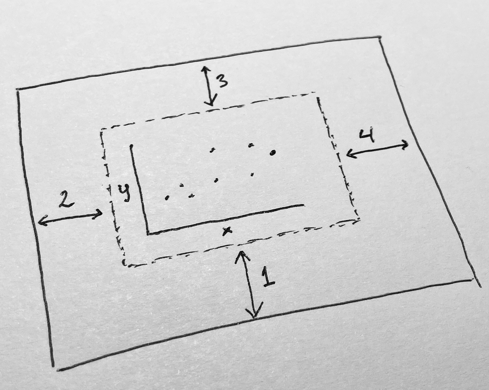
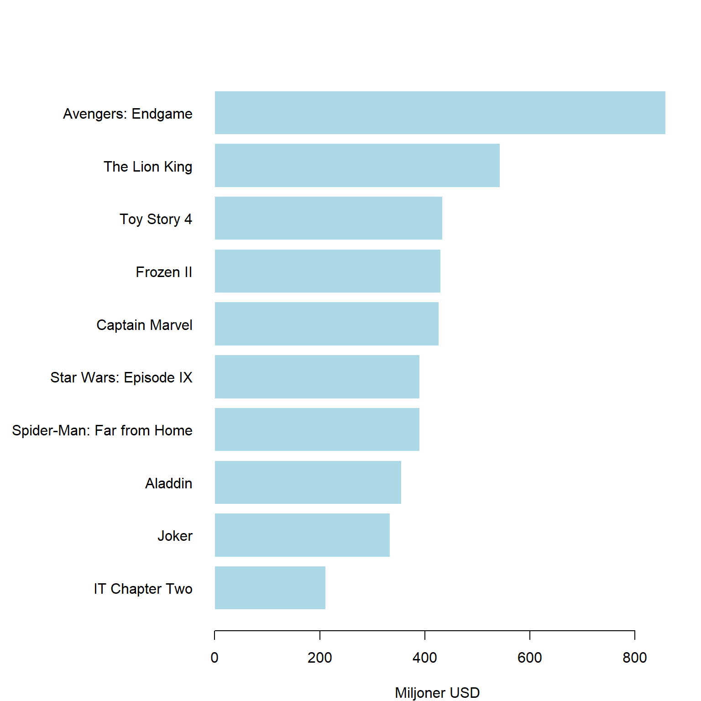

Kapitel 8 Figurer
En figur kan vara ett diagram, ett foto, en skiss. Om tabeller ger detaljer, så är syftet med figurer att förmedla en överskådlig sammanfattning om det vi studerar. I detta avseende måste man alltid ställa sig frågan om en figur är nödvändig eller om den enbart kopierar information som redan återfinns i en tabell. En bra figur kan däremot leda till en lång diskussion förkortas och kan göra en rapport eller vetenskaplig artikel lättläst.
Eftersom figurerna ofta är det som läsaren av en vetenskaplig artikel eller en rapport först ser är det viktigt att figurerna är välgjorda. R ger tillgång till omfattande möjligheter för datavisualisering och en anledning till utvecklingen av R var behovet av ett verktyg för avancerad visualisering. Dels ger basutbudet i R stora möjligheter, dels finns det paket (exempelvis ggplot2 och lattice) som ger ytterligare möjligheter. Det bör nämnas att man ofta får prova sig fram när man skapar figurer i R och nybörjaren bör därför inte misströsta. Övning ger färdighet.
När vi ska skapa en figur är det viktigt att veta det primära syftet med figuren utifrån två alternativ:
Figurer primärt avsedda för en intern analys, dvs för dataanalytikern och andra involverade i analysen. Syften kan till exempel vara att studera data explorativt vid tvätt av data, kontrollera att förutsättningar är uppfyllda vid analyser eller förmedla preliminära resultat. Estetiska och pedagogiska aspekter hos sådana figurer är inte av någon större vikt. Däremot måste naturligtvis figurerna på ett korrekt sätt representera data. Figurer avsedda att presenteras ëxternt, dvs figurer som presenteras i en rapport, vetenskaplig artikel eller ett bildspel. En sådan figur ska på ett tydligt och korrekt redovisa det väsentliga i en analys. Den ska även vara estetiskt fullgod. Dessutom måste figuren vara sparad i ett format som fungerar för det medium det ska publiceras i. Beroende på syfte tar det olika lång tid att skapa figurer. Det kan vara bra att veta att även figurer avsedda för enbart internt bruk kan, om de är komplicerade, ta flera timmar att skapa. Dessutom kan det ta ännu fler timmar för att få data i ordning för att skapa figuren.
Vi kan klassificera figurer enligt fyra kategorier:
Ok. Oestetisk, men korrekt. Dålig, innebär att figuren är svårtolkad men principellt korrekt. Felaktig.
R ger tillgång till omfattande möjligheter gällande datavisualisering. Dels ger basversionen i R stora möjlighet, dels finns det paket (exempelvis ggplot2 och lattice) som ger ytterligare funktionalitet. När vi ska skapa en figur är det viktigt att fundera över det primära syftet med figuren. Det går att klassificera syftet med figurer enligt följande:
- Figurer primärt avsedda för att beskriva något internt, dvs för dataanalytikern och andra involverade i analysen. Syftet kan till exempel vara att studera data explorativt vid tvätt av data, kontrollera att förutsättningar är uppfyllda vid analyser och förmedla preliminära resultat. Estetiska och pedagogiska aspekter hos sådana figurer är inte av någon större vikt. Däremot måste naturligtvis figurerna på ett korrekt sätt representera data.
- Figurer avsedda att presenteras ëxternt, dvs figurer som presenteras i en rapport, vetenskaplig artikel eller ett bildspel. En sådan figur ska på ett tydligt och korrekt redovisa det väsentliga i en analys. Den ska även vara estetiskt fullgod. Dessutom måste figuren vara sparad i ett format som fungerar för det medium det ska publiceras i.
Beroende på syfte tar det olika lång tid att skapa figurer. Det kan vara bra att veta att även figurer avsedda för enbart internt bruk kan, om de är komplicerade, ta flera timmar att skapa.
- Ok.
- Oestetisk, men korrekt.
- Dålig, innebär att figuren är svårtolkad men principellt korrekt.
- Felaktig.
DDen första figuren är OK eftersom den redovisar stapeldiagramen utan felaktigheter. Den andra figuren är oestetisk beträffande färgval och har hjälplinjer som löper över staplarna istället för bakom. Figuren som klassas som dålig är korrekt, men det är svårt att urskilja detaljer i den. Dessutom är namnen på kategorierna otydliga och kan förväxlas med poäng. Den felaktiga figuren visar staplarna, men det finns ingen information som gör figuren möjlig att tolka.
Notera att distinktionen oestetisk-dålig-felaktig är flytande. Att ha olika färger på staplar innebär att tolkningen av innebär att läsaren kan föranledas att tro att det ytterligare information som inte finns. En korrekt figur som är dålig, kanske är så dålig att den kan misstolkas vilket innebär att den egentligen är felaktig.
Forskare och andra som regelbundet arbetar med vetenskapliga rapporter brukar ofta ha en ganska bra uppfattning om vad som är en korrekt figur. Däremot saknas en känsla för estetiken i en figur. Å andra sidan är det inte ovanligt att se grafiker som skapar vackra figurer, men som inte tillfredställande korrekt sätt redovisar data.

8.1 Grundläggande figurhantering
Det finns ofta uppsättning figurer som ofta används. Vi kommer gå igenom de vanligaste som räcker för de absolut flesta situationer. Utöver dessa finns till exempel figurer som visar 3D-dimensionella samband, kartor och specialdiagram. Innan vi presenterar några vanlig typer av figurer ska vi gå igenom ett några grundläggande funktioner som en användare ska känna till när man konstruerar figurer.
För det första bygger R på att man med hjälp av en figur-funktion, t ex plot(), skapar en canvas/målarduk. Det går sedan att med olika argument i flera steg måla på denna målarduk. Vi illusterar detta sätt att arbeta med figurer genom att först med funktionen plot() skapa en figur. Sedan används funktionen lines() för rita en regressionslinje figuren i figuren.
# Läs in data för figurer
x1 <- c(10, 8, 13, 9, 11, 14, 6, 4, 12, 7, 5)
x2 <- c(10, 8, 13, 9, 11, 14, 6, 4, 12, 7, 5)
x3 <- c(10, 8, 13, 9, 11, 14, 6, 4, 12, 7, 5)
x4 <- c(8, 8, 13, 8, 8, 8, 8, 8, 8, 8, 8)
y1 <- c(8.04, 6.95, 7.58, 8.81, 8.33, 9.96, 7.24, 4.26, 10.84, 4.82, 5.68)
y2 <- c(9.14, 8.14, 8.74, 8.77, 9.26, 8.10, 6.13, 3.10, 9.13, 7.26, 4.74)
y3 <- c(7.46, 6.77, 12.74, 7.11, 7.81, 8.84, 6.08, 5.39, 8.15, 6.42, 5.73)
y4 <- c(6.58, 5.76, 7.71, 8.84, 8.47, 7.04, 5.25, 12.50, 5.56, 7.91, 6.89)
# Regressionlinje
x <- 4:14
Ey <- 3.00 + 0.500*x
# Skapa en figur för x1 och y1. Ritar sedan en regressionslinje med lines()
plot(x1, y1)
lines(x, Ey)
För det andra omges målarduken av en ram, så kallade marginaler. Genom att använda funktionen par(mar = c(5.1, 4.1, 4.1, 2.1)), värdena är default-inställningen på marginalernas storlek, kan vi enkelt ändra marginalernas storlek. Figuren nedan illusterar målarduken i mitten med marginalerna omkring. Ordningen på värdena korresponderar till respektive marginals position. Det finns en nedre marginal (1), en vänstermarginal (2), en övre marginal (3) och en högermarginal (4).

Genom att ändra värdena ser vi ser att marginalernas storlek ändras. Det är mycket vanligt att Justera marginalernas storlek eftersom onödiga vita ytor inte är önsvärda i en figur. Det kan också vara så atte marginalers storlek måste utökas på grund att delar i figuren, t ex namn, annars inte får plats. I exemplet nedan hamnar exempelvis x-axelns namn utanför figuren och syns inte.
För det tredje är det vanligt att kombinera flera diagram i en figur. Detta är möjligt med par() funktionen, fast nu med argumentet mfrow = c(antalrader, antalkolumner) som innehåller två värden, en som anger antalet rader och anger antalet kolumner.
Exemplet nedan hur fyra diagram över samband kan illustereras i en och samma figur. De fyra datamaterialen kallas för Anscombes kvartett (Anscombe, 1973) och är berömd illustration av hur viktig datavisualisering är. Alla fyra datamaterial har nämligen samma medelvärde, standardavvikelse, korrelation och regressionlinje. Men en grafisk jämförelse visar hur olika egenskaper de olika datamaterialen har!
# Skapa fyra diagram i en figur, 2 rader och 2 kolumner. Fyller på med lines i varje diagram.
par(mfrow = c(2, 2))
plot(x1, y1, xlim = c(4,15), ylim = c(4,13))
lines(x, Ey, col = "red")
plot(x2, y2, xlim = c(4,15), ylim = c(4,13))
lines(x, Ey, col = "red")
plot(x3, y3, xlim = c(4,15), ylim = c(4,13))
lines(x, Ey, col = "red")
plot(x4, y4, xlim = c(4,15), ylim = c(4,13))
lines(x, Ey, col = "red")
Vi är dock inte helt nöjda med ovanstående figur, utan vi tycker det finns för mycket vit yta mellan diagrammen. Vi kombineras de bägge argumenten i par() med målet att ha fyra diagram i en figur, men med mindre marginaler. Nu ser det bättre ut!
# Skapa fyra diagram i en figur. Fyller på med en linje med lines()
par(mfrow = c(2, 2), mar = c(4, 4, 1, 1))
plot(x1, y1, xlim = c(4,15), ylim = c(4,13))
lines(x, Ey, col = "red")
plot(x2, y2, xlim = c(4,15), ylim = c(4,13))
lines(x, Ey, col = "red")
plot(x3, y3, xlim = c(4,15), ylim = c(4,13))
lines(x, Ey, col = "red")
plot(x4, y4, xlim = c(4,15), ylim = c(4,13))
lines(x, Ey, col = "red")
8.1.1 Exportera figurer
Det finns ett antal olika format att exportera figurer till. Det absolut enklaste är använda Export i fliken Plots. Här väljer du antingen Save as image… eller Save as PDF…
- PDF är ett bra format om man ska skriva ut. Det är vektorbaserat vilket innebär att det går bra att zooma in i bilden utan att upplösningen blir dålig. Figuren tar inte mycket minne.
- Formatet png är bitmap-baserat format som är utmärkt för webben. Ofta krävs, tyvärr, också png för ordbehandlingsprogram, vilket gör exxport av figurer med hög kvalitet krångligare, jämfört med PDF. Använd aldrig jpg, som är alternativet.
Det finns dock ganska få inställningar i Export. Ett alternativ som ger mer flexibilitet är att skapa en PDF eller png från R och sen rita figuren på denna. Vi tittar på två exempel nedan, först ett för PDF och sedan ett för png.
# Skapa en PDF att rita. Storleken anges med width och height och dimensionen är tum.
pdf("data/rplot.pdf", width = 8, height = 6)
# Börja rita figuren på filen
par(mfrow = c(2, 2), mar = c(4, 4, 1, 1))
plot(x1, y1, xlim = c(4,15), ylim = c(4,13))
lines(x, Ey, col = "red")
plot(x2, y2, xlim = c(4,15), ylim = c(4,13))
lines(x, Ey, col = "red")
plot(x3, y3, xlim = c(4,15), ylim = c(4,13))
lines(x, Ey, col = "red")
plot(x4, y4, xlim = c(4,15), ylim = c(4,13))
lines(x, Ey, col = "red")
# Stänger plot och sparar. Den sparas enligt sökvägen ovan.
dev.off()# Skapar en png att rita på. Storleken anges med width och height och dimensionen är cm (units).
# Upplösningen (dpi) är viktig för en bitmap-baserad fil. Förslagsvis används res = 1200 för utskrift och res = 72 webben eller skärmen. type = "cairo" anger att kantutjämning (antialias) ska användas, vilket ger snyggare utseende.
png("data/rplot.png", width = 18, height = 14, units = "cm", res = 1200, type='cairo')
par(mfrow = c(2, 2), mar = c(4, 4, 1, 1))
plot(x1, y1, xlim = c(4,15), ylim = c(4,13))
lines(x, Ey, col = "red")
plot(x2, y2, xlim = c(4,15), ylim = c(4,13))
lines(x, Ey, col = "red")
plot(x3, y3, xlim = c(4,15), ylim = c(4,13))
lines(x, Ey, col = "red")
plot(x4, y4, xlim = c(4,15), ylim = c(4,13))
lines(x, Ey, col = "red")
dev.off()Avslutningsvis några tips:
- Bestäm bredd-höjd-relationen (aspect ratio) redan när du skapar figuren i R. Stretcha inte figuren efter att du skapat figuren! Kvaliteten kan försämras betydligt. Du kan dock eventuellt förminska och förstora figuren, så länge bredd-höjd-relationen bibehålls.
- Om det finns mycket vit yta, minska marginalerna med argumentet mar i par()funktionen.
- Om du skapar en stor figur, då måste du med t ex cex-argument i figuren öka storleken på text. Ofta måste man prova sig fram. Var beredd på att ändra storlek på text och siffror i figuren.
8.2 Färger och figurer
8.3 Typer av figurer
8.3.1 Presentation av aggregerade data
Aggregerade data (summor, antal, medelvärden, andelar) presenteras ofta i
- stapeldiagram, där R använder funktionen barplot().
- punktdiagram, där R använder funktionen dotchart().
I princip kan samma information redovisas i en tabell, men en grafisk presentation blir enklare att avläsa. På grund av relationen mellan stapeldiagram och tabeller används i R ofta skapat tabellobjekt, men det går också att använda enskilda variabler från en data frame. Vad som dock är viktigt när man skapar figurer i R är att användaren först måste skapa data i ett format som kan analyseras, sedan skapas figuren.
Ett vanligt exemplet är om vi vill för olika kategorier vill redovisa medelvärden eller antal. Genom att använda funktionen aggregate() kan skapa en dataframe med nödvändigt information. Därefter tillämpar vi barplot.
Vi exemplifierar med att vi vill för varje kategori (1-9) av psykologisk bedömning (enligt pyskolog från en intervju med den mönstrande) beskriva medelvärdet för Test A. Kategorinamnen är långa och detta kan hanteras på två sätt. Antingen skapar vi nya kortare namn och förtydligande med argumentet xlabs eller så roteras kategorinamnen med argumentet las. Av dessa två alternativ rekommenderas generellt det första eftersom man som läsaren annars tvingas vrida huvudet och överskådligheten minskar.
df_testa_phys <- aggregate(df$testa ~ df$physical, df, FUN = mean)
par(mfrow=c(3,1))
barplot(df_testa_phys[,2],
names.arg = c("Kategi 1", "Kategori 2", "Kategori 3", "Kategori 4", "Kategori 5", "Kategori 6", "Kategori 7", "Kategori 8", "Kategori 9"),
ylab = "Medelvärde av Test A")
barplot(df_testa_phys[,2],
names.arg = c("1", "2", "3", "4", "5", "6", "7", "8", "9"),
xlab = "Fysisk bedömning (1-9)",
ylab = "Medelvärde av Test A")
barplot(df_testa_phys[,2],
names.arg = c("Kategori 1", "Kategori 2", "Kategori 3", "Kategori 4", "Kategori 5", "Kategori 6", "Kategori 7", "Kategori 8", "Kategori 9"),
ylab = "Medelvärde av Test A",
las = 2)
boxoffice2019 <- data.frame(title = c("Aladdin", "Avengers: Endgame", "Captain Marvel", "Frozen II", "IT Chapter Two", "Joker", "Spider-Man: Far from Home", "Star Wars: Episode IX", "The Lion King", "Toy Story 4"),
amount = c(355772511, 858373000, 426829839, 430144682, 211593228,333772511,390532085, 390706234,543638043,434038008))
barplot(boxoffice2019$amount,
names.arg=boxoffice2019$title)

par(mar = c(4, 12, 1, 2))
barplot(boxoffice2019$amount,
names.arg=boxoffice2019$title,
horiz = TRUE,
las=1)
par(mfrow = c(1, 1))
boxoffice2019_decreasing <- boxoffice2019[order(boxoffice2019[,2], decreasing=FALSE), ]
par(mar = c(4, 12, 4, 2))
barplot(boxoffice2019_decreasing$amount/1000000,
names.arg=boxoffice2019_decreasing$title,
horiz = TRUE,
las=1,
xlab = "Miljoner USD",
col = "lightblue",
border ="white")
När man har mångra kategorier lämpar sig dotcharts bättre. Vi ska se ett exempel på detta. I paketet dslabs fick datasetet gapminder. Vi läser in detta dataset för att jämföra europeiska förväntade livslängd.
library("dslabs")
gapminderEurope2015 <- gapminder[(gapminder$continent == "Europe" & gapminder$year == 2015), ]
gapminderEurope2015$color <- factor(gapminderEurope2015$region)
levels(gapminderEurope2015$color)[levels(gapminderEurope2015$color) == "Eastern Europe"] <- "coral2"
levels(gapminderEurope2015$color)[levels(gapminderEurope2015$color) == "Western Europe"] <- "palegreen2"
levels(gapminderEurope2015$color)[levels(gapminderEurope2015$color) == "Southern Europe"] <- "tan2"
levels(gapminderEurope2015$color)[levels(gapminderEurope2015$color) == "Northern Europe"] <- "deepskyblue2"
gapminderEurope2015decreasing <- gapminderEurope2015[order(gapminderEurope2015$life_expectancy),]
par(mar = c(4, 12, 1, 2))
barplot(gapminderEurope2015decreasing$life_expectancy,
names.arg = gapminderEurope2015decreasing$country,
horiz = TRUE,
las = 2,
xlim = c(0, 90),
xlab = "Life expectancy (years)",
col = as.character(gapminderEurope2015$color),
border ="white")
par(mfrow = c(1,2))
dotchart(gapminderEurope2015$life_expectancy,
labels= gapminderEurope2015$country,
las = 2,
cex = 0.8,
xlim = c(0, 90),
xlab = "Life expectancy (years)")
dotchart(gapminderEurope2015decreasing$life_expectancy,
labels= gapminderEurope2015decreasing$country,
las = 2,
cex = 0.8,
xlim = c(0, 90),
xlab = "Life expectancy (years)")
dotchart(gapminderEurope2015decreasing$life_expectancy,
labels= gapminderEurope2015decreasing$country,
las = 2,
cex = 0.8,
xlab = "Life expectancy (years)",col = as.character(gapminderEurope2015$color))
boxoffice2019 <- data.frame(title = c("Aladdin", "Avengers: Endgame", "Captain Marvel", "Frozen II", "IT Chapter Two", "Joker", "Spider-Man: Far from Home", "Star Wars: Episode IX", "The Lion King", "Toy Story 4"),
amount = c(355772511, 858373000, 426829839, 430144682, 211593228,333772511,390532085, 390706234,543638043,434038008))
barplot(boxoffice2019$amount,
names.arg=boxoffice2019$title)barplot(boxoffice2019$amount,
names.arg=boxoffice2019$title,
las=2)
par(mar = c(4, 12, 1, 2))
barplot(boxoffice2019$amount,
names.arg=boxoffice2019$title,
horiz = TRUE,
las=1)
par(mfrow = c(1, 1))
boxoffice2019_decreasing <- boxoffice2019[order(boxoffice2019[,2], decreasing=FALSE), ]
par(mar = c(4, 12, 4, 2))
barplot(boxoffice2019_decreasing$amount/1000000,
names.arg=boxoffice2019_decreasing$title,
horiz = TRUE,
las=1,
xlab = "Miljoner USD",
col = "lightblue",
border ="white")
gapminderNorthernEurope2015 <- gapminderEurope2015[gapminderEurope2015$region == "Northern Europe",]
gapminderNorthernEurope2015$population_prop <- gapminderNorthernEurope2015$population/sum(gapminderNorthernEurope2015$population)
pie(gapminderNorthernEurope2015$population, labels = gapminderNorthernEurope2015$country )

8.4 Cirkeldigram
R-manualen avråder från cirkeldiagram.


- Det finns om man vill se om en grupp kategorier överstiger en andel (t ex 50%)
- Don’t use pie charts.
- If you find yourself unable to follow #1, keep in mind the challenges with pie charts: if relative sizes are important, you’ll need to include data labels. Also be aware of impact of color on 2D space (darker looks larger); don’t let your tool decide your color scheme.
8.5 Figurer för fördelningar
Histogram används för att visualisera en kontinuerlig variabel. Funktionen hist() skapar ett histogram. Nackdelen med histogram är att den är känslig för antalet klasser. Testa därför olika antal klasser.
par(mfrow = c(2,2))
hist(df$gripstrength, xlab="Greppstyrka (Newton)", ylab="Antal", breaks=7, main="7 klasser")
hist(df$gripstrength, xlab="Greppstyrka (Newton)", ylab="Antal", breaks=14, main="14 klasser")
hist(df$gripstrength, xlab="Greppstyrka (Newton)", ylab="Antal", breaks=28, main="28 klasser")
hist(df$gripstrength, xlab="Greppstyrka (Newton)", ylab="Antal", breaks=56, main="56 klasser")
8.6 Lådagram
Lådagram används främst när vi ska jämföra fördelningar uppdelat på kategorier. Att använda lådagram för en enda variabel är inte optimalt, utan histogram ger då mer information.
Vi vill studera testresultat uppdelat på psykologisk bedämning
 ## Histogram
Histogram används för att visualisera en kontinuerlig variabel. Funktionen hist() skapar ett histogram. Nackdelen med histogram är att den är känslig för antalet klasser. Testa därför olika antal klasser.
## Histogram
Histogram används för att visualisera en kontinuerlig variabel. Funktionen hist() skapar ett histogram. Nackdelen med histogram är att den är känslig för antalet klasser. Testa därför olika antal klasser.
par(mfrow = c(2,2))
hist(df$gripstrength, xlab="Greppstyrka (Newton)", ylab="Antal", breaks=7, main="7 klasser")
hist(df$gripstrength, xlab="Greppstyrka (Newton)", ylab="Antal", breaks=14, main="14 klasser")
hist(df$gripstrength, xlab="Greppstyrka (Newton)", ylab="Antal", breaks=28, main="28 klasser")
hist(df$gripstrength, xlab="Greppstyrka (Newton)", ylab="Antal", breaks=56, main="56 klasser")
8.7 Spridningsdiagram
Den vanligaste funktionen i R för att skapa figurer är plot. Det finns många argument och i de närmaste obegränsade möjligher att anpassa figurerna

8.8 Några frekvent förekommande diagram.
I surveydata stöter vi ofta på uppdelade stapeldiagram. Dessa figurer har en inneboende problem eftersom kategorierna storlek kan vara svåra att relatera till varandra. Samtidigt är de en visualisering som gör det enkelt att jämföra fördelningar för många variabler av typen attitydfrågor. För att illustrera kategoriserar vi testresultat på begåvningstesterna i INSARK enligt nedanstående schema.
Some key rules for table layout are the following:
Do not use vertical lines. Do not use horizontal lines between data rows. (Horizontal lines as separator between the title row and the first data row or as frame for the entire table are fine.) Text columns should be left aligned. Number columns should be right aligned and should use the same number of decimal digits throughout. Columns containing single characters are centered. The header fields are aligned with their data, i.e., the heading for a text column will be left aligned and the heading for a number column will be right aligned.